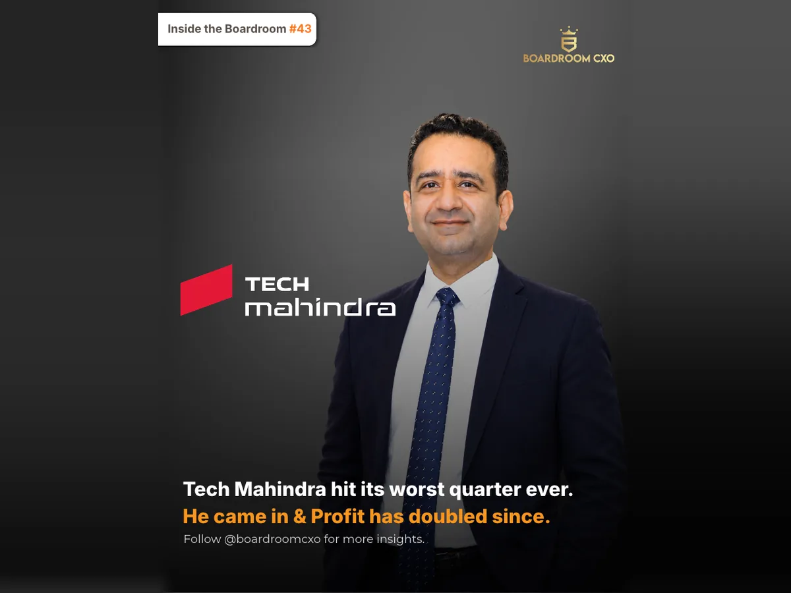

Key Takeaways
- Tech Mahindra's EBIT margin fell to an all-time low of 4.7% in the July to September 2023 quarter, and FY24 profit after tax fell 51.2% to ₹2,358 crore.
- In April 2024, Mohit Joshi publicly targeted a 15% EBIT margin by FY27, and the shares rose 10% to ₹1,309.10 on the BSE.
- Tech Mahindra's FY26 profit after tax was ₹4,811 crore, and its EBIT margin reached 14.8% in the July to September 2026 quarter, 0.2 points short of the target.
"There was a great deal of scepticism about the plan."
Mohit Joshi, CEO and Managing Director of Tech Mahindra, said that in 2026, looking back at the target he set in public two years earlier: a 15% operating margin by March 2027.
When he made that promise, Tech Mahindra's margin had just hit an all-time low of 4.7%. By the July to September 2026 quarter, it was 14.8%. The deadline is March 2027. The gap left is 0.2 percentage points.
Tech Mahindra's Worst Quarter
The turnaround started with a collapse. In the July to September 2023 quarter, Tech Mahindra's EBIT margin, the share of revenue left after operating costs, fell to 4.7%. Business Today called it an all-time low. Net profit fell 61.6% from a year earlier to ₹494 crore, and revenue was down 2%. The results missed analyst estimates on revenue, profit and margin.
The full year was no better. In FY24, Tech Mahindra's revenue fell 5.0% in dollar terms to $6,277 million. Consolidated profit after tax fell 51.2% to ₹2,358 crore, roughly half of the year before. Even in the January to March 2024 quarter, after Joshi had taken charge, the EBIT margin was only 7.4%. Headcount at the end of March 2024 was 1,45,455, down from 1,52,400 a year earlier.
Low margins in IT services are not just an accounting problem. They mean less money to pay people well, train them, win large deals and return cash to shareholders. A company stuck at 5% to 7% falls further behind every quarter.
For one of India's largest IT services companies, part of the Mahindra Group, this was a business losing ground on both growth and profit at the same time.
Who Is Mohit Joshi?
Mohit Joshi is the Managing Director and CEO of Tech Mahindra. Before that, he spent more than two decades at Infosys, which he joined in 2000 and where he rose to President. Earlier in his career, he worked in the corporate and investment banking businesses of ABN AMRO and ANZ Grindlays.
Tech Mahindra's board announced his appointment in March 2023, after what the chair of its nomination and remuneration committee called "a rigorous selection process". He was named to take over as MD and CEO when C P Gurnani retired in December 2023. In other words, the board chose an outsider to run the company, nine months before the worst quarter in its history.
The Turn: Mohit Joshi's Public Targets for Tech Mahindra
Even before he took charge, the restructuring began. In October 2023, the company announced that the business would be consolidated into six core strategic business units from January 2024. The Americas business was split into three units, India was carved out as its own unit, and delivery would move from a structure based on geography to one based on industry verticals. Joshi said the aim was to streamline, focus and drive resilience, and to improve margins.
Most leaders taking over a struggling company keep their targets vague. That way, nobody can say they missed. Joshi did the opposite.
In April 2024, a few months into the job, he set out a three-year plan with numbers attached. By FY27, Tech Mahindra would:
- Reach a 15% EBIT margin.
- Grow revenue faster than its peers.
- Deliver return on capital employed above 30%.
- Return more than 85% of free cash flow to shareholders.
The stock jumped 10% to ₹1,309.10 on the BSE the next morning, even though the March quarter results were weak. Joshi later explained why he chose to be so specific:
He wanted to articulate "a very clear sense of what we would do in three years, backed by numbers." Vaguer statements, he said, "would have accomplished very little."
Then came the hard part. According to Business Today's account of the turnaround, the company reset its talent strategy, reassigning and reskilling its own people and bringing in senior leaders from other industries. It used technology to raise productivity and cut costs, raised employee utilisation and relooked at its pricing models. It built a plan to work more closely with the wider Mahindra Group. It stopped chasing deals that did not make economic sense and put guardrails in place against project failures. And it moved from buying growth through acquisitions to growing organically, by mining its top accounts.
What the Tech Mahindra Turnaround Delivered
The numbers moved quarter by quarter.
- FY26 profit doubled from FY24. Profit after tax rose 13.2% to ₹4,811 crore, more than twice the ₹2,358 crore of FY24. EBIT rose 39.2% to ₹7,152 crore, and the EBIT margin for the year was 12.6%.
- Margins kept climbing. The EBIT margin was 13.8% in the January to March 2026 quarter, 14.4% in April to June 2026, and 14.8% in July to September 2026, up 260 basis points in a year.
- Big deals came back. New deal wins were $3,794 million in FY26, up 41.6%. In the July to September 2026 quarter, new deal wins of $1.02 billion marked the fourth quarter in a row above $1 billion.
- Growth returned too. Revenue in the July to September 2026 quarter was $1.693 billion, up 7.2% from a year earlier in constant currency, and the shares rose about 8% on the day the results came out.
- The board rewarded shareholders. In October 2026, the board recommended a 1:1 bonus issue, its first since 2015, subject to shareholder approval. FY26 dividends totalled ₹51 a share, the highest ever.
And the margin rose without the company shrinking. Headcount was 1,45,455 at the end of FY24 and 1,47,623 at the end of FY26. The margin nearly tripled from its low with more people on the payroll, not fewer.
The people side moved as well. "Employee satisfaction is also at a six-year high," Joshi told Business Today in 2026.
Joshi has been careful not to declare victory. "It has been a successful transition but it's not complete; we still have to deliver it by March," he said in 2026.
The Boardroom Lesson: Public Targets Protect the Turnaround
A private target is easy to move. If the margin comes in at 12% instead of 15%, the board can call it progress, and the CEO can call it a tough market. A public target cannot be moved without everyone seeing it.
Private targets protect the leader. Public targets protect the turnaround.
By putting a number and a date in front of investors, Joshi gave every manager in the company the same goal and the same deadline. He also gave the board a simple way to judge him. That is uncomfortable for a CEO. It is exactly what a board should want.
Common Mistakes Boards Make When Hiring a Turnaround CEO
Boards that bring in a new leader to fix a struggling company often make the same three errors.
They accept vague goals in the first year. "Stabilise the business" cannot be measured. Tech Mahindra's plan had a margin, a growth benchmark, a return on capital and a cash payout, all with a date.
They expect a turnaround to mean shrinking. Cutting people is the fastest way to lift margins for a quarter or two. Tech Mahindra lifted its margin from 4.7% to 14.8% while its headcount grew, by fixing pricing, utilisation and the mix of deals.
They let the new CEO keep every deal. Revenue is easy to buy with low-margin work. Walking away from deals that do not make economic sense is a harder call, and it needs the board's backing.
A Framework for Choosing a Turnaround CEO
When we brief boards on a leadership search for a business that needs fixing, we push for three specific checks.
- Ask for the numbers they would commit to. A strong candidate will name a margin, a growth rate and a date, and explain what has to be true to reach them.
- Look for an outsider who knows the industry. Joshi came from a direct competitor, Infosys, with more than two decades in IT services. He brought fresh eyes without needing to learn the business.
- Test their willingness to say no. Ask candidates for a deal or client they turned away, and what it cost them in the short term.
Why This Belongs in the Boardroom, Not Just the Business Pages
Tech Mahindra's story sits next to the one we told about Anish Shah at the Mahindra Group, another outsider who fixed the group's loss-making businesses by setting clear rules and sticking to them. Both turnarounds began with a leader willing to be judged in public.
A number in a press release is a promise. Keeping it is the turnaround.
Sources
- Mahindra Group (press release), Tech Mahindra appoints Mohit Joshi as MD & CEO designate, March 2023
- Business Today, Tech Mahindra CEO-designate goes on restructuring drive after tepid Q2 results, October 2023
- Tech Mahindra (press release), Tech Mahindra reports 29% increase in PAT, Board recommends dividend of Rs 28 per share, April 2024
- Tech Mahindra (investor fact sheet), Tech Mahindra Q4 FY24 fact sheet, April 2024
- Business Today, Tech Mahindra shares climb 10% on CEO's FY27 roadmap; should you buy stock?, April 2024
- Mahindra Group (press release), Tech Mahindra FY26 EBIT rises to ₹7,152 crores, up 39.2% YoY; declares ₹36 final dividend taking total to ₹51, highest ever, April 2026
- Business Today, How Tech Mahindra's Mohit Joshi turned around the company's performance while simultaneously driving growth, September 2026
- Business Today, Tech Mahindra shares surge as Q2 margins beat estimates; check brokerage targets, October 2026
Related Reading
Anish Shah: The Outsider Who Fixed Mahindra's ₹5,200 Crore Problem
Read → R · 02 Founder Leadership · September 2026Venu Nair Took the Job Nobody Wanted at Shoppers Stop. He Turned It Around in About a Year.
Read → R · 03 Founder Leadership · October 2026Shailesh Chandra Took Over Tata's Cars at Their Low Point. Sales Are Now Nearly 5x.
Read →Hiring a CEO to fix a business, and want a plan you can hold them to?
We screen for leaders who will put a number and a date on a turnaround and can show where they have done it before. Brief us on your next CXO mandate and we will tell you what the market actually has to offer.
Brief Us on a Mandate See all Finance roles we fill →